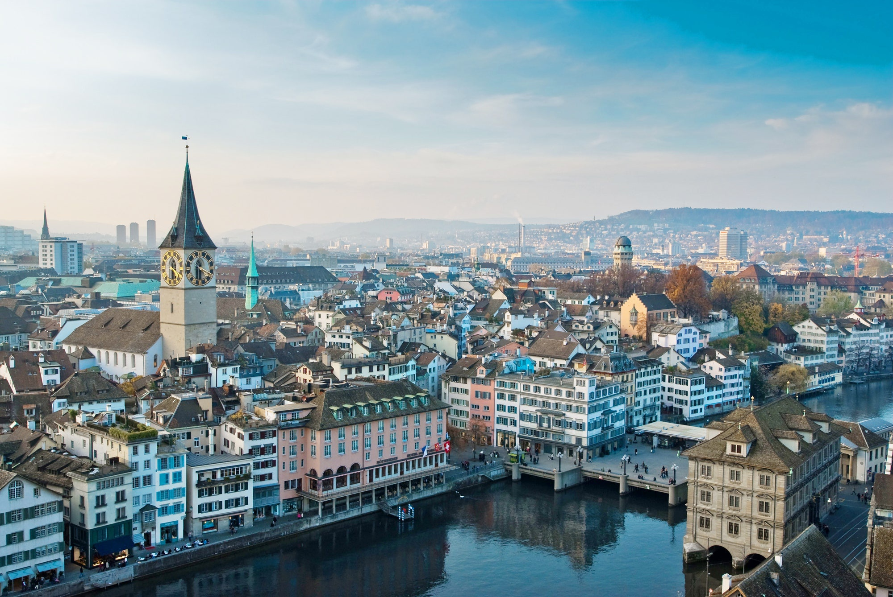
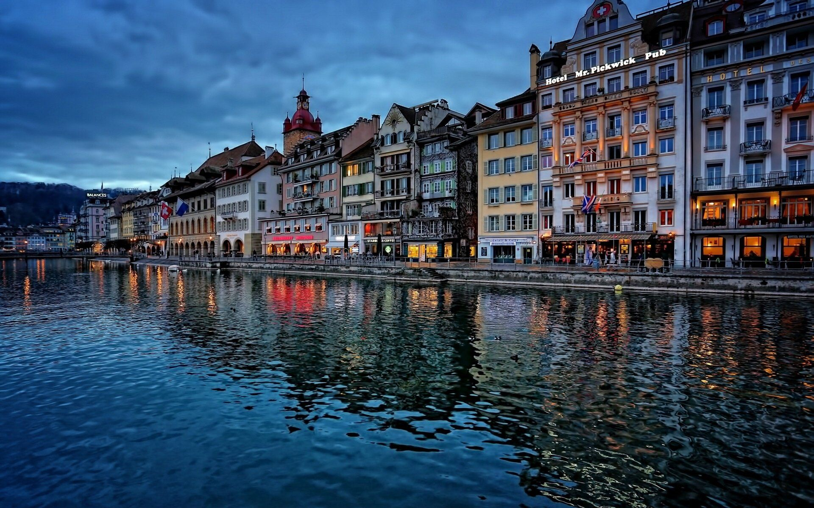
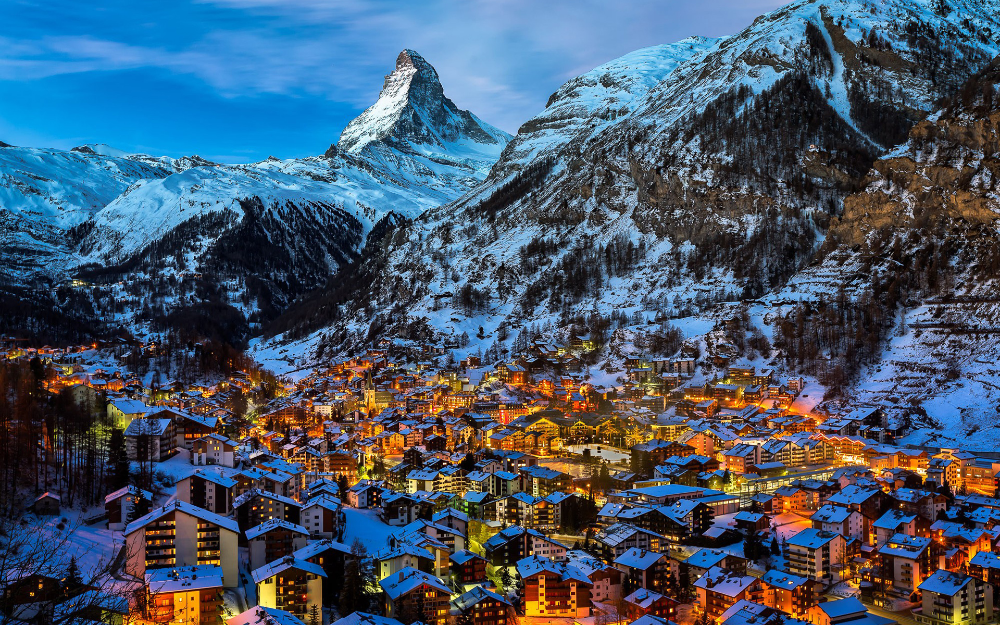
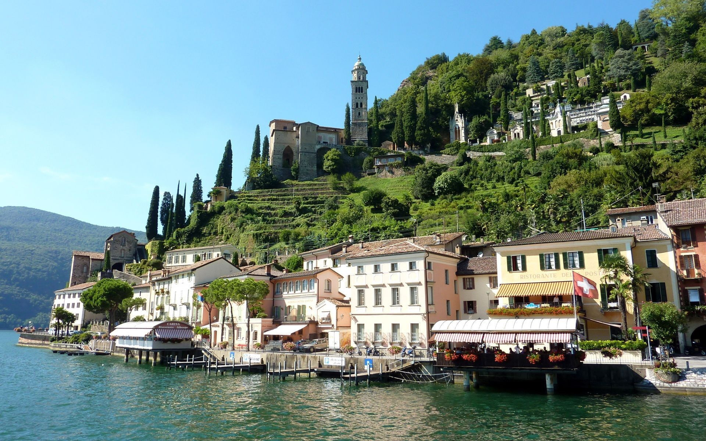

Con più di 1.8 milioni di abitanti, Zurigo è la città più grande del paese, e capitale del cantone omonimo.
Classificata da Mercer come città più vivibile al mondo, Zurigo ospita un paesaggio di spicco e luoghi famosi
come il duomo (Grossmünster), il teatro dell'opera (Opernhaus Zürich) e la Bahnhofstrasse,
l'iconico distretto commerciale. È anche una meta di studenti da tutto il mondo, ospitando l'ETH, uno degli istituti
universari politecnici più avanzati e prestigiosi al mondo.
Localizzata davanti all'omonimo lago, Ginevra è la seconda città più importante del paese. Tra le attrazioni principali
sono presenti la vieille-ville, ovvero il centro storico, la cattedrale di San Pietro e il jet d'eau, l'iconica
fontana sul lago che può essere osservata da tutta la città. Ginevra ospita inoltre la seconda sede delle Nazioni Unite, il
Palais des Nations.

Localizzata nella riva del lago dei Quattro Cantoni, Lucerna è una delle mete turistiche più famose del paese,
con punti d'interesse come il Kapellbrücke, il ponte di legno più antico d'Europa, che connette le due zone della città
separate dal lago. Di nota anche la chiesa gesuita barocca Jesuitenkirche e la famosa scultura del Leone di Lucerna,
che, insieme ai paesaggi delle Prealpi Svizzere, rendono Lucerna una delle città più conosciute del paese.

Meta turistica di eccellenza e rinomata stazione per lo sci alpino, Zermatt è un paese di circa 5700 abitanti nel
Cantone di Vallese, ai piedi del Monte Cervino, toccando anche il Monte Rosa. Il paese presenta un grande numero
di impianti sciistici e di risalita, che offrono servizi per gli sciatori di tutto il mondo sia in estate che in inverno.

Alla riva dell'omonimo lago, Lugano è la città più popolata del Canton Ticino, estendosi dai pendici del
San Salvatore fino al Monte Briè, nonchè una meta turistica di spicco. Tra le attrazioni principali
della città abbiamo la cattedrale di San Lorenzo, la Chiesa di San Rocco, la Chiesa di
Santa Maria di Loreto e la famosa Piazza della Riforma.

Posto ai piedi delle Alpi Bernesi, Grindelwald è un piccolo paese di 3700 abitanti nel Canton Berna.
Conosciuta per essere una rinomata località sciistica, in estate ospita una scena d'alpinismo, che
vede come protagoniste le vette bernesi di Eiger, Mönch e Jungfrau.